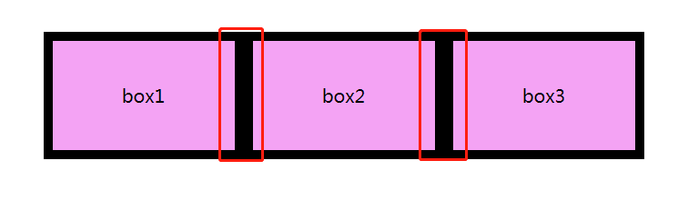
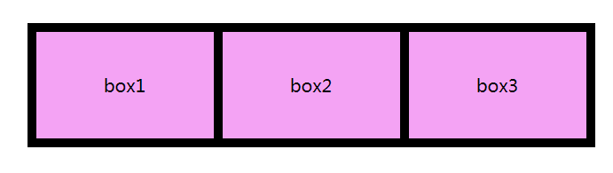
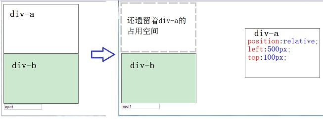
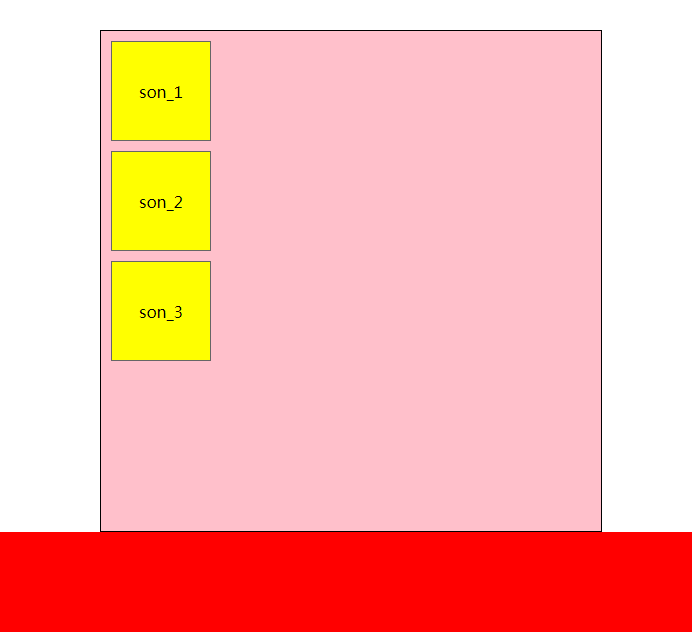
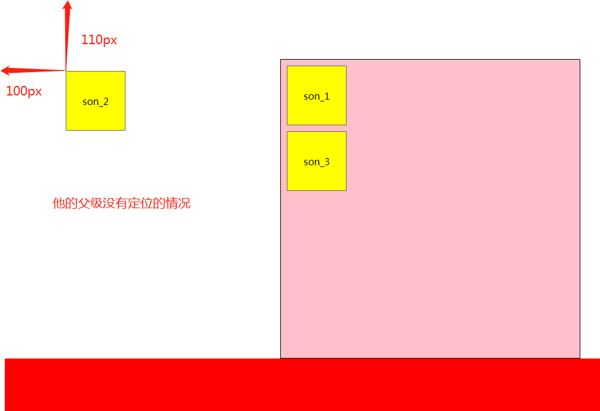

前言
这篇blog主要为分享一下我再学习CSS的经验，并对我所学习的CSS知识进行总结。这篇文章我只要针对CSS在布局中主要遇到的问题和解决办法，为了总结我再学习中遇到的问题和知识点。在这片文章中重点来总结CSS布局中的三大重点：盒子模型、浮动、和定位，用一句话来概括我们用CSS来进行页面布局学习的话，就是学习CSS就是在学习盒子模型、浮动和定位，这三大模块。
CSS全称是Cascading Style Sheets，翻译过来的意思是层叠样式表，主要用来修饰，渲染HTML页面的。Web前端学习的三个技术是HTML,CSS,JavaScript。HTML：相当于人的骨骼，为web页面提供框架结构；CSS：相当于人的化妆，为了更好看的展示页面，渲染页面；JavaScript：相当于人的行动就像是跳舞，为了更加生动吸引人，为了提高web页面的效果，是页面更加生动更加交互。接下来，我们进入正题，我将分享一些我学习的css知识。
首先讲一下CSS的语法和页面引入的基本方式
CSS的语法
CSS的定义方法是: 选择器 { 属性:值; 属性:值; 属性:值;}。
选择器是将样式和页面元素关联起来的名称，属性是希望设置的样式属性每个属性有一个或多个值。代码示例：1
div { width: 100px; height: 100px; color: red }
这个代码的意思是选择div标签，是div标签的宽度设为100px，高度设为100px，字体的颜色为红色，这行代码对所有div生效。
CSS的引入方式
CSS的引入方式分为：
外联式：通过link标签来连接到外部的css样式表文件到html页面中,代码如下：
1
<link rel="stylesheet" type="text/css" herf="css/main.css">
嵌入式的内部样式表：通过
<style></style>，在这标签中写入css的方式,代码如下：1
2
3
4
5
6
7
8<style>
.box {
position: relative;
width: 150px;
height: 150px;
color: #666666;
}
</style>内联式的方式:通过标签的style属性，在标签上直接写样式,代码如下：
1
<div class="banner" style="width: 100px;height: 100px; margin: 10px auto 0;"></div>
CSS选择器
CSS选择器主要有一下几种：
通用符
*选择器,*表示所有的元素，选择了所有的元素例如，初始化清除原有标签的margin和padding值：1
2
3
4* {
margin: 0;
padding: 0;
}标签选择器，选择标签来进行CSS编写，例如,选择所有div标签将字体颜色设置为红色：
1
2
3div {
color: red;
}类选择器，这种选择器在我们日常中使用的最多，因为通过类名来选择元素，一个类可应用于多个元素，一个元素上也可以使用多个类，应用灵活，可复用，所以是css中应用最多的一种选择器，例如将类名为red的标签字体颜色设置为白色，背景颜色设置为红色：
1
2
3
4
5
6
7
8<style>
.red {
color: white;
background-color: red;
}
</style>
<div class="red">....</div>
<div class="red yellow">.....</div>id选择器，和类选择器类似，但是id选择器的开头为#id,例如：
1
2
3
4
5
6<style>
#box_id {
background-color: pink;
}
</style>
<div id="box_id">....</div>层级选择器：主要应用在选择父元素下的子元素，或者子元素下面的子元素，可与标签元素结合使用，减少命名，同时也可以通过层级，防止命名冲突。
1
2
3
4
5
6
7
8
9
10
11
12<style>
.box span{color:red}
/* 防止修改了h3的字体颜色，这只修改了.box下面的.red的字体颜色 */
.box .red{color:pink}
.red{color:red}
</style>
<div class="box">
<span>....</span>
<a href="#" class="red">....</a>
</div>
<h3 class="red">....</h3>主意，在层级选择器中可以分为两个类型：一种是如实例一样不带’>’,意味着只要是他的后代都会生效；第二种是利用’>’例如
.box >span >a { color: red;},这个意思是要一层一层的往下才能生效，就必需是父子关系。组选择器：多个选择器，如果有同样的样式设置，可以使用组选择器，例如：
1
2
3
4.box1,.box2,.box3{width:100px;height:100px}
.box1{background:red}
.box2{background:pink}
.box2{background:gold}1
2
3<div class="box1">....</div>
<div class="box2">....</div>
<div class="box3">....</div>注意组选择器的每个选择器是并列的状态，中间一定要加逗号’,’，如果没有逗号就成了层级的选择器了
伪类及伪元素选择器：常用的伪类选择器有hover，表示鼠标悬浮在元素上时的状态，伪元素选择器有before和after,它们可以通过样式在元素中插入内容。
1
2
3
4
5
6
7
8
9
10.clearfix:before,.clearfix:after {
content: '';
display: table;
}
.clearfix:after {
clear: both;
}
.clearfix {
zoom: 1;
}这就是一个伪元素的选择器的样式，这样式的主要为解决浮动带来的一些问题来清除浮动的
1
2
3
4.nav >a:hover {
color: red;
text-decoration: underline;
}1
2
3<div class="nav">
<a href="#" target="_blank">.....</a>
</div>这就是一个为类选择器，主要功能是鼠标选定在这元素上是改变字体的颜色和增加文本下划线
- 以上是主要的一些选择器，在CSS3中新增了一些选择器：
- E:nth-child(n)：匹配元素类型为E且是父元素的第n个子元素；
- E:nth-last-child(n)：匹配元素类型为E且是父元素的倒数第n个子元素（与上一项顺序相反）
- E:first-child：匹配元素类型为E且是父元素的第一个子元素
- E:last-child：匹配元素类型为E且是父元素的最后一个子元素
- E ~ F E元素后面的兄弟元素
- E + F 紧挨着的兄弟元素
- 属性选择器：E[data-attr] 含有data-attr属性的元素
E[data-attr=’ok’] 含有data-attr属性的元素且它的值为“ok”；
E[data-attr^=’ok’] 含有data-attr属性的元素且它的值的开头含有“ok”
E[data-attr$=’ok’] 含有data-attr属性的元素且它的值的结尾含有“ok”
E[data-attr*=’ok’] 含有data-attr属性的元素且它的值中含有“ok”
CSS中文本相关的主要样式
常用的应用文本的css样式：
- font-size: 设置文字的大小，现在普遍在将字体大小设置为14px，尽量使用偶数的字体大小。 例如
font-size: 14px; - font-family: 设置字体名称。按优先顺序排列。以逗号隔开。如果字体名称包含空格或中文，则应使用引号括起，可以设置多个字体，浏览器会按照顺序依次来查找字体，如果第一没有，就找第二个，直到找到合适的字体。
在浏览器中可以使用unicode字体，例如：
1
font-family: "\5FAE\8F6F\96C5\9ED1"，/*表示设置字体为“微软雅黑”*/
可以通过escape() 来测试属于什么字体。
| 字体名称 | 英文名称 | Unicode 编码 |
|---|---|---|
| 宋体 | SimSun | \5B8B\4F53 |
| 新宋体 | NSimSun | \65B0\5B8B\4F53 |
| 黑体 | SimHei | \9ED1\4F53 |
| 微软雅黑 | Microsoft YaHei | \5FAE\8F6F\96C5\9ED1 |
| 楷体_GB2312 | KaiTi_GB2312 | \6977\4F53_GB2312 |
| 隶书 | LiSu | \96B6\4E66 |
| 幼园 | YouYuan | \5E7C\5706 |
| 华文细黑 | STXihei | \534E\6587\7EC6\9ED1 |
| 细明体 | MingLiU | \7EC6\660E\4F53 |
| 新细明体 | PMingLiU | \65B0\7EC6\660E\4F53 |
为了照顾不同电脑的字体安装问题，我们尽量只使用宋体和微软雅黑中文字体
font-style: 设置字体风格，是否倾斜。如：
1
2font-style: 'normal'; /*设置不倾斜*/
font-style: 'italic'; /*设置倾斜*/font-weight: 设置字体的粗细
font-weight属性用于定义字体的粗细，其可用属性值：normal、bold、bolder、lighter、100~900（100的整数倍）
其中要font-weight: 400;与font-weight: normal;是一样的结果，700等于boldline-height: 用于设置行间距，就是行与行之间的距离，即字符的垂直间距，一般称为行高，为了美观一般情况下，行距比字号大7.8像素左右就可以了例如：
1
line-height: 34px;
line-height: 1.6;如果line-height 后面没有给单位，这个意思行高为字体大小的 1.6倍；没用给单位的行高就表示字体大小的多少倍的行高。针对于font可以写成一句话，但是一定要按照下面的书写顺序，特别是，font-family一定要放在最后，否则样式出现问题而不生效，对于不需要设置的项可以省略不写，但是font-size和font-family 一定要写
1
选择器 {font: font-style font-weight font-size/line-height font-family}
color: 设置文字的颜色，它有三种表示方法
- 系统预定义的颜色，如color: red;
- 利用rgb颜色表示法来表示颜色 如 color: rgb(0,0,0);
- 利用十六进制的方式表示颜色 如 color: #0000000;
- text-align: 让文字在水平方向上对齐方式，它有三种值：left、center、right；
text-indent: 设置文字首行缩进的大小，一般首行缩进2个字
1
text-indent: 2em;
text-decration: 文本的装饰，例如增加下滑线等
| 值 | 描述 |
|---|---|
| none | 默认。定义标准的文本。 |
| underline | 定义文本下的一条线。下划线 也是我们链接自带的 |
| overline | 定义文本上的一条线。 |
| line-through | 定义穿过文本下的一条线。 |
标签的显示模式(display)
标签的显示模式分为三种：1. 块元素 2. 行内元素 3. 行内块元素
1. 块元素（block）
块元素具有以下特点：
- 在正常的文档流中，独自占据一行
- 支持全部样式（包括width,height,margin,padding等)
- 没有设置宽度时，默认的宽度为父级内容的宽度
- 在块元素中可以放在其他块元素和行内元素等元素
块元素一般包括一些常用的标签有（div,h1~h6,p,ul,li,dd等）
注意：只有 文字才 能组成段落 因此 p 里面不能放块级元素，同理还有这些标签h1,h2,h3,h4,h5,h6,dt，他们都是文字类块级标签，里面不能放其他块级元素。
2. 行内元素（inline）
行内元素具有以下特点：
- 在文档流中，他们并列在一排
- 高、宽无效，但水平方向的padding和margin可以设置，垂直方向的无效。
- 他们宽度和高度由他们包含着的内容决定的
- 在行内元素中只能放在文本或其他行内元素，除了 标签例外
- 他们还有一个小问题，由于文字基线的问题，他们之间会产生小的间距
行内元素一般包括：<a>、<strong>、<b>、<em>、<i>、<del>、<s>、<ins>、<u>、<span>等
注意：a 标签里不能再放链接标签，也就是说a 标签下不能再放a 标签
3. 行内块元素（inline-block）
行内块元素的特点：
- 他们并列在一行上显示
- 支持全部样式
- 在他们当中可以放置其他块元素和行内元素
- 默认的宽度和高度，为内容的宽度和高度
- 也因为文字基线的问题，会存在一些小的缝隙
标签显示方式的转换
- 装换为块元素：display：block；
- 转换为行内元素：display：inline；
- 转换为行内块元素：display: inline-block;
可以利用浮动和定位，将标签转换为行内块元素
- 如果给任意标签元素设置了float样式，那么这个标签的显示方式将变为行内块元素（inline-block）
- 如果给任意标签设置了position样式，那么这个标签也将转换为行内块元素
这个是因为float和position隐藏的特点
display显示模式的设置的使用技巧
display属性下可以跟一下值：none | block | inline | inline-block
如果display： none；那么这个标签将隐藏起来，并且不再占据原有的位置；当我们想要在显示这盒子是我们就在将display：block；这样这个盒子就能正常出现。
此应用技巧，可以结合伪类或javascript一起使用，增加页面的交互性。
例如，京东的分类导航栏，当鼠标放上去的时候，就会出现一个盒子页面有详细的信息，这个就是利用了hover和position还有display值的改变来实现的。
盒子模型（css重点）

其实我们网页布局的实质就是像堆积木一样，在码方盒子，布置盒子，将一个个盒子利用css来码放好，这样在浏览器中按照摆放的盒子来显示页面，这个就是我们css布局的本质。可以想象一下我们布置家里的家具，这个家具就像一个个盒子然后一个一个按照你的要求摆放好。
按照盒子模型的图片，从外到内详细的介绍一下盒子模型
盒子模型的最外面，盒子与盒子之间的距离，我们称之为外边距-margin
margin：外边距，盒子与盒子之间的距离，它相当于划分了自己的区域，按照上下左右分为一下属性：
- margin-top 盒子顶部的外边距
- margin-right 盒子右侧的外边距
- margin-bottom 盒子下部外边距
- margin-left 盒子左侧外边距
这个就是将盒子围一圈保护起来的意思。
针对外边距的设置可以，连在一起写
- margin: 10px 20px 30px 40px; 这个意思是按照顺时针的方向，将margin-top设置成了10px，margin-right设置成了20px,margin-bottom设置成了30px，margin-left设置成了40px;
- margin: 10px 20px 30px; 三个参数的意思是，上为10px,下为30px,左右相同为20px;
- margin: 10px 20px; 两个参数的时候，表示上下为10px,左右为20px;
- margin: 50px; 一个参数的时候，表示上下左右全是50px;
总结：margind的值全都是按照顺时针的方向来进行声明的，也就是上-右-下-左，如果后面为一个参数，则设置上右下左为一样的值；如果为两个参数，则第一个参数设置为上下，第二个参数为左右；如果为三个参数，则中间的参数为左右，其他两个为上下。
margin-left和margin-right,如果两个盒子并排放置，那么他们的之间的间距为第一个盒子的margin-right 加上 第二个盒子的margin-left。
margin在使用中存在的小bug问题
margin-top 与 margin-bottom 垂直合并的问题
当上下相邻的两个块元素相遇时，如果上面的元素有下外边距margin-bottom，下面的元素有上外边距margin-top，则他们之间的垂直间距不是margin-bottom与margin-top之和，而是两者中的较大者。这种现象被称为相邻块元素垂直外边距的合并（也称外边距塌陷）。

解决办法：1、使用这种特性，尽量避免 2、设置一边的外边距，一般设置margin-top
margin-top 塌陷问题
对于两个嵌套关系的块元素，如果父元素没有上内边距及边框，则父元素的上外边距会与子元素的上外边距发生合并，合并后的外边距为两者中的较大者，即使父元素的上外边距为0，也会发生合并。

解决办法
- 可以给父元素（外部盒子）设置一个边框
- 可以给父元素（外部盒子）增加overflow: hidden;
- 利用伪类来实现：
1
2
3
4.clearfix:before {
content: "";
display: table;
}
盒子的边框（border）
如盒子模型的图片一下，border就是盒子的外壳。盒子边框的设置语法如下:
1 | border: border-width | border-style | border-color; |
border 分为border-top、border-right、border-bottom、border-left；
他们每个都具有border-width、border-style、border-color。
详细的border列表
| 设置内容 | 样式属性 | 常用属性值 |
| 上边框 | border-top-style:样式; border-top-width:宽度;border-top-color:颜色;border-top:宽度 样式 颜色; | |
| 下边框 | border-bottom-style:样式;border- bottom-width:宽度;border- bottom-color:颜色;border-bottom:宽度 样式 颜色; | |
| 左边框 | border-left-style:样式; border-left-width:宽度;border-left-color:颜色;border-left:宽度 样式 颜色; | |
| 右边框 | border-right-style:样式;border-right-width:宽度;border-right-color:颜色;border-right:宽度 样式 颜色; | |
| 样式综合设置 | border-style:上边 [右边 下边 左边]; | none无（默认）、solid单实线、dashed虚线、dotted点线、double双实线 |
| 宽度综合设置 | border-width:上边 [右边 下边 左边]; | 像素值 |
| 颜色综合设置 | border-color:上边 [右边 下边 左边]; | 颜色值、#十六进制、rgb(r,g,b)、rgb(r%,g%,b%) |
| 边框综合设置 | border:四边宽度 四边样式 四边颜色; |
1 | border-top: 1px solid red; /*上边框*/ |
内边距-padding 内容与边框的间距
padding 和 margin的设置一样，只是padding是内边距。
padding也分为padding-top、padding-right、padding-bottom、padding-left;
值的个数和margin一样，表示相同的意思。
| 值的个数 | 表达意思 |
|---|---|
| 1个值 | padding：上下左右边距 比如padding: 3px; 表示上下左右都是3像素 |
| 2个值 | padding: 上下边距 左右边距 比如 padding: 3px 5px; 表示 上下3像素 右5像素 |
| 3个值 | padding：上边距 左右边距 下边距 比如 padding: 3px 5px 10px; 表示上是3像素 左右是5像素 下是10像素 |
| 4个值 | padding:上内边距 右内边距 下内边距 左内边距 比如: padding: 3px 5p 10px 15px; 表示 上3px 右是5px 下10px 左15px 顺时针 |
盒子模型在页面布局中使用的技巧
利用margin让盒子水平居中
让盒子内的文字进行水平居中是使用： text-align: center;
让文字垂直居中使用：line-height: 盒子的高度;
让盒子水平居中使用：margin: auto; ——就是将margin-left和margin-right设置为auto；
1 | .box { |
margin: xx auto 0; 这个意思就是让盒子水平居中
注意：要让盒子水平居中，必须满足一下两点
1. 盒子必须是块元素
2. 盒子必须有固定的宽度值
margin负值让元素位移及边框合并
因为margin可以为负值，所以可以利用margin负值来位移元素是他们的边框合并，例如，三个盒子并排紧紧的挨在一起，他们都有边框，这时可以明显看出挨着的边框为2倍的原来边框，我们要他们看起来边框一样，这时我们可以设置 margin-left：边框的宽度的负值;


border可以用于table标签的表格边框制作
在使用<table></table>标签制作表格时,目前都使用border来制作表格的边框
1、定义表格宽高，将border、cellpadding、cellspacing全部设置为0。
2、border-collapse:collapse 设置边框合并，制作一像素宽的边线的表格。
浮动float（CSS重点）
标准流也称之为文档流
文档流，是指盒子按照html标签编写的顺序依次从上到下，从左到右排列，块元素占一行，行内元素在一行之内从左到右排列，先写的先排列，后写的排在后面，每个盒子都占据自己的位置。
浮动
浮动是脱离了标准流，简称脱标，他会放弃自己的位置，就像是浮动起来一下，它下边的元素会占据他的位置。
浮动的特点
- 浮动只有两种设置float: left 和float: right;
- 浮动的元素会向左或向右浮动，碰到父元素内容的边界（padding）、浮动元素、未浮动的元素才停下来
- 相邻浮动的块元素可以并在一行，超出父级宽度就换行
- 动让行内元素或块元素自动转化为行内块元素
- 浮动元素之间没有垂直margin的合并
如果父元素没有给height的值时，父元素内整体浮动的元素无法撑开父元素，需要清除浮动
浮动的元素总是找理它最近的父级元素对齐。但是不会超出内边距的范围

清除浮动
因为如果父元素没有给height的值时，父元素内整体浮动的元素无法撑开父元素，所以需要清除浮动，清除浮动有以下4种方法：
在最后一个浮动元素的后面增加一个空标签来清除浮动，通常使用div标签然后增加clear:both
1
2
3
4
5
6
7
8
9
10
11<style>
.container li {
float: left;
}
</style>
...
<ul class="container">
<li>首页</li>
<li>关于我们</li>
<div style="clear: both;"></div> <!--清除浮动的空标签，加上清除浮动的样式-->
</ul>在父元素上增加overflow:hidden
1
2
3.container {
overflow: hidden;
}
利用伪元素，来清除浮动
1
2
3
4
5
6
7
8
9
10
11
12.clearfix:after {
content: '';
display: block;
visibility: hidden;
height: 0;
clear: both;
}
/* 清除ie版本上的浮动的方法 */
.clearfix {
zoom: 1;
}
/* 将这个类付给父级元素上 */利用before和after两个伪元素来一起清除浮动，这同时也可以来解决margin-top塌陷问题
1
2
3
4
5
6
7
8
9
10
11.clearfix:before,.clearfix:after {
content: '';
display: table;
}
.clearfix:after {
clear: both;
}
.clearfix {
zoom: 1;
}
/* 将这个类付给父级上 */
定位position
什么是CSS的定位,定位的基本思想很简单，它允许你定义元素框相对于其正常位置应该出现的位置，或者相对于父元素、另一个元素甚至浏览器窗口本身的位置。
为什么要用定位，因为定位可以让元素脱离标准流即元素脱离文档流的布局，可以让他有在页面的任意位置显示，同时可以和其他元素结合，从而达到页面的设计要求，可以观察下面的例子：

通过这个例子我们明显可以看到，标签的小图标可以很容易的放到产品块的上，同时不影响文档流。
position属性的生效的构成
position（定位）要想生效有两部分:
- 边偏移
| 边偏移属性 | 描述 |
|---|---|
| top | 顶端偏移量，定义元素相对于其父元素上边线的距离 |
| right | 顶端偏移量，定义元素相对于其父元素上边线的距离 |
| bottom | 顶端偏移量，定义元素相对于其父元素上边线的距离 |
| left | 顶端偏移量，定义元素相对于其父元素上边线的距离 |
- 定位模式（定位分类）
| 值 | 描述 |
|---|---|
| static | 自动定位（默认定位方式） |
| relative | 相对定位，相对于其原文档流的位置进行定位 |
| absolute | 绝对定位，相对于其上一个已经定位的父元素进行定位 |
| fixed | 固定定位，相对于浏览器窗口进行定位 |
position: static 静态定位
这个是默认的属性，在取消定位时可以将position: static;
静态定位是所有元素的默认定位方式，当position属性的取值为static时，可以将元素定位于静态位置。 所谓静态位置就是各个元素在HTML文档流中默认的位置。
position: relative 相对定位
relative ：相对定位；不脱离文档流的布局，只改变自身的位置，在文档流原先的位置遗留空白区域。定位的起始位置为此元素原先在文档流的位置。

注意
- 相对定位最重要的一点是，它可以通过边偏移移动位置，但是原来的所占的位置，继续占有。
其次，每次移动的位置，是以自己的左上角为基点移动（相对于自己来移动位置）
就是说，相对定位的盒子仍在标准流中，它后面的盒子仍以标准流方式对待它。（相对定位不脱标）
position: absolute 绝对定位
absolute ： 脱离文档流的布局，遗留下来的空间由后面的元素填充。定位的起始位置为最近的父元素(postion不为static)，否则为Body文档本身
初始化没有用绝对定位时


所以，我们可以得出如下结论：
因为子级是绝对定位，不会占有位置， 可以放到父盒子里面的任何一个地方。父盒子布局时，需要占有位置，因此父亲只能是 相对定位.
绝对定位的盒子水平/垂直居中
普通的盒子是左右margin 改为 auto就可， 但是对于绝对定位就无效了
定位的盒子也可以水平或者垂直居中，有一个算法。
首先left 50% 父盒子的一半大小
然后走自己外边距负的一半值就可以了 margin-left。
position: fixed 固定定位
固定定位是绝对定位的一种特殊形式，类似于 正方形是一个特殊的 矩形。它以浏览器窗口作为参照物来定义网页元素。当position属性的取值为fixed时，即可将元素的定位模式设置为固定定位.
固定定位有两点：
- 固定定位的元素跟父亲没有任何关系，只认浏览器。
- 固定定位完全脱标，不占有位置，不随着滚动条滚动。
叠放次序（z-index）
当对多个元素同时设置定位时，定位元素之间有可能会发生重叠。

在CSS中，要想调整重叠定位元素的堆叠顺序，可以对定位元素应用z-index层叠等级属性，其取值可为正整数、负整数和0。
注意：
z-index的默认属性值是0，取值越大，定位元素在层叠元素中越居上。
如果取值相同，则根据书写顺序，后来居上。
后面数字一定不能加单位。
只有相对定位，绝对定位，固定定位有此属性，其余标准流，浮动，静态定位都无此属性，亦不可指定此属性。
定位总结
| 定位模式 | 是否脱标占有位置 | 是否可以使用边偏移 | 移动位置基准 |
|---|---|---|---|
| 静态static | 不脱标，正常模式 | 不可以 | 正常模式 |
| 相对定位relative | 脱标，占有位置 | 可以 | 相对自身位置移动 |
| 绝对定位absolute | 完全脱标，不占有位置 | 可以 | 相对于定位父级移动位置 |
| 固定定位fixed | 完全脱标，不占有位置 | 可以 | 相对于浏览器移动位置 |